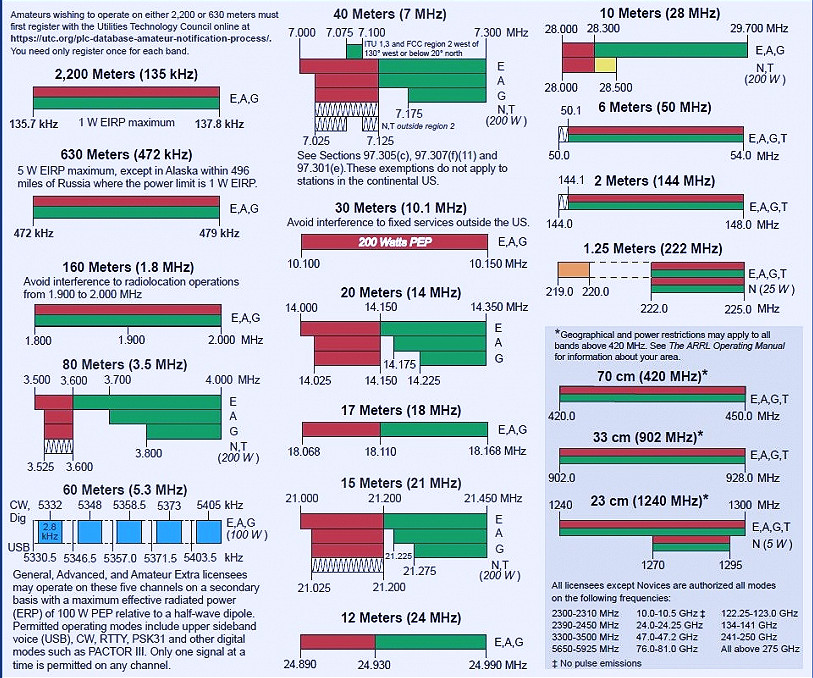

HOME
|
CW PAGE
KG4QLX ITU Zone 8 CQ Zone 4 Grid Square EM86ba SKCC #7046 NAQCC #4744
ARRL Amateur Radio Bands

Links
ARRL US Amateur Radio Bands
eQSL.cc
HRDLog.net
Logbook of the World
PSKReporter
QRZ
Tuning From Scratch
Tuner TX=5, ANT=0, IND=L
TX carrier @ 5w. Adjust IND, then TX for lowest reflected power.
Increase ANT & adjust TX for lowest reflected power.
Repeat step 3 until lowest reflected power achieved.
Reduce IND one position (L=lowest). Adjust the TX and ANT for lowest SWR. Continue until lowest SWR cannot be repeated.
Increase IND one position (A=highest). Tune for lowest SWR.